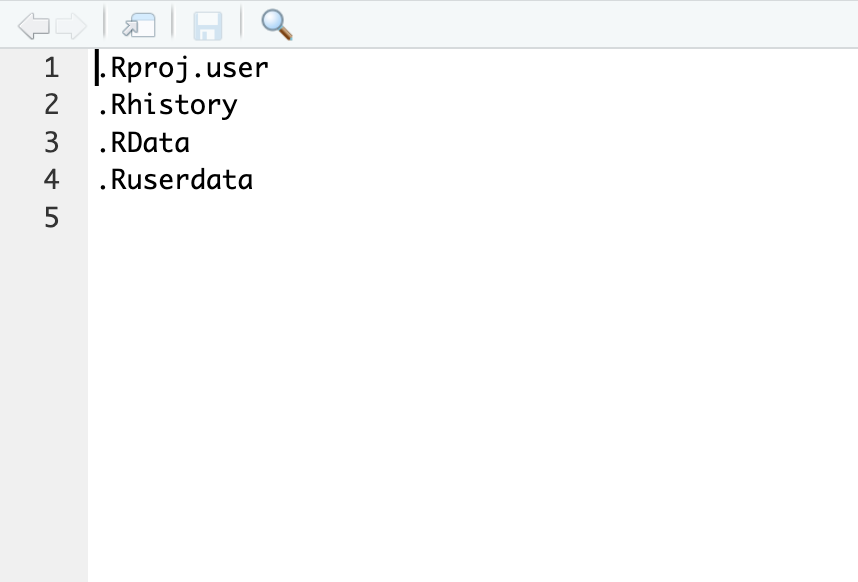

Aprendendo a ignorar
Algumas vezes incluímos em nosso repositório arquivos que não
queremos que apareça no GitHub, e que as mudanças também não sejam
monitoradas. Por exemplo, um arquivo de texto que contém um manuscrito
em progresso, ou uma imagem (ou várias imagens) que são muito pesadas
para serem enviadas pelo git, entre outras situações variadas. Mas o
ponto é, estes arquivos ainda fazem parte do projeto em andamento e você
gostaria de mantê-los na pasta juntamente com os outros arquivos
monitorados. A solução para isso é pedir que o git os ignore. Nesta
seção aprenderemos como podemos fazer com que alguns arquivos escapem da
observação do git, e, consequentemente, não apareçam no repositório
remoto do GitHub.
O arquivo .gitignore
Para ignorarmos arquivos ou até mesmo pastas inteiras vamos utilizar
um arquivo especial chamado .gitignore. Este arquivo não
tem nome, apenas extensão, e fica hospedado na raiz do seu diretório.
Algumas vezes ele é criado automáticamente ao iniar remotamente o
repositório, outras ele é criado por você manualmente. Um arquivo do
tipo .gitignore apresenta a seguinte aparência quando criado
automaticamente

Note que ele é formado por algumas extensões apenas. De maneira
resumida, qualquer arquivo que apresente as extensões indicadas no
arquivo gitignore vai ser ignorado pelo git.
O arquivo gitignore é extremamente versátil para acomodar uma série
de instruções. Podemos ignorar um arquivo específico ao indicar o
caminho deste arquivo a partir da raiz do diretório. Podemos ignorar uma
pasta inteira. Ou ainda um conjunto de arquivos que apresentem a mesma
característica. Todas os padrões possíveis de serem utilizados no
arquivo gitignore podem ser encontrados aqui
Aqui alguns dos padrões mais comuns
- para ignorar um arquivo único dentro de uma pasta use
pasta/nomeDoArquivo.extensao
- para ignorar todos os arquivos dentro de uma pasta específica use
pasta/. isso irá ignorar caminhos abaixo do indicado
- para ignorar arquivos inteiros dentro de uma pasta use
pasta/*. Isso irá ignorar qualquer arquivo dentro da
pasta.
- para ignorar arquivos a partir de um dado padrão de nome use
padrao.*. Isso irá ignorar qualquer arquivo dentro do
diretório e suas subpastas que apresentem o padrão indicado. Por
exemplo, digamos que exista o arquivo chamado padrao.docx e
padrao.txt, ambos os arquivos serão ignorados
Parar de monitorar um arquivo que já está sendo monitorado
Algumas vezes queremos que um arquivo que já está sendo monitorado
pelo git pare de ser observado. Para isso não basta que este arquivo
seja apenas incluído no .gitignore, precisamos incluí-lo no .gitignore e
removê-lo do cache. Vamos supor que queremos ignorar o arquivo chamado
arrependimento.docx No terminal faça o seguinte
git rm --cached arrependimento.docx
A partir de então o arquivo passará a ser ignorado pelo git, ou seja,
mesmo que mudanças sejam feitas nele, elas não aparecerão.
LS0tCnRpdGxlOiAnVXRpbGl6YW5kbyBvIGdpdGlnbm9yZScKYXV0aG9yOiAiR2FicmllbCBOYWthbXVyYSIKZGF0ZTogImByIFN5cy5EYXRlKClgIgpvdXRwdXQ6IGh0bWxfZG9jdW1lbnQKLS0tCgpgYGB7ciBrbGlwcHksIGVjaG89RkFMU0UsIGluY2x1ZGU9VFJVRX0Ka2xpcHB5OjprbGlwcHkoKQpgYGAKCiMgQXByZW5kZW5kbyBhIGlnbm9yYXIKCkFsZ3VtYXMgdmV6ZXMgaW5jbHXDrW1vcyBlbSBub3NzbyByZXBvc2l0w7NyaW8gYXJxdWl2b3MgcXVlIG7Do28gcXVlcmVtb3MgcXVlIGFwYXJlw6dhIG5vIEdpdEh1YiwgZSBxdWUgYXMgbXVkYW7Dp2FzIHRhbWLDqW0gbsOjbyBzZWphbSBtb25pdG9yYWRhcy4gUG9yIGV4ZW1wbG8sIHVtIGFycXVpdm8gZGUgdGV4dG8gcXVlIGNvbnTDqW0gdW0gbWFudXNjcml0byBlbSBwcm9ncmVzc28sIG91IHVtYSBpbWFnZW0gKG91IHbDoXJpYXMgaW1hZ2VucykgcXVlIHPDo28gbXVpdG8gcGVzYWRhcyBwYXJhIHNlcmVtIGVudmlhZGFzIHBlbG8gZ2l0LCBlbnRyZSBvdXRyYXMgc2l0dWHDp8O1ZXMgdmFyaWFkYXMuIE1hcyBvIHBvbnRvIMOpLCBlc3RlcyBhcnF1aXZvcyBhaW5kYSBmYXplbSBwYXJ0ZSBkbyBwcm9qZXRvIGVtIGFuZGFtZW50byBlIHZvY8OqIGdvc3RhcmlhIGRlIG1hbnTDqi1sb3MgbmEgcGFzdGEganVudGFtZW50ZSBjb20gb3Mgb3V0cm9zIGFycXVpdm9zIG1vbml0b3JhZG9zLiBBIHNvbHXDp8OjbyBwYXJhIGlzc28gw6kgcGVkaXIgcXVlIG8gZ2l0IG9zIGlnbm9yZS4gTmVzdGEgc2XDp8OjbyBhcHJlbmRlcmVtb3MgY29tbyBwb2RlbW9zIGZhemVyIGNvbSBxdWUgYWxndW5zIGFycXVpdm9zIGVzY2FwZW0gZGEgb2JzZXJ2YcOnw6NvIGRvIGdpdCwgZSwgY29uc2VxdWVudGVtZW50ZSwgbsOjbyBhcGFyZcOnYW0gbm8gcmVwb3NpdMOzcmlvIHJlbW90byBkbyBHaXRIdWIuCgojIE8gYXJxdWl2byBgLmdpdGlnbm9yZWAKClBhcmEgaWdub3Jhcm1vcyBhcnF1aXZvcyBvdSBhdMOpIG1lc21vIHBhc3RhcyBpbnRlaXJhcyB2YW1vcyB1dGlsaXphciB1bSBhcnF1aXZvIGVzcGVjaWFsIGNoYW1hZG8gYC5naXRpZ25vcmVgLiBFc3RlIGFycXVpdm8gbsOjbyB0ZW0gbm9tZSwgYXBlbmFzIGV4dGVuc8OjbywgZSBmaWNhIGhvc3BlZGFkbyBuYSByYWl6IGRvIHNldSBkaXJldMOzcmlvLiBBbGd1bWFzIHZlemVzIGVsZSDDqSBjcmlhZG8gYXV0b23DoXRpY2FtZW50ZSBhbyBpbmlhciByZW1vdGFtZW50ZSBvIHJlcG9zaXTDs3Jpbywgb3V0cmFzIGVsZSDDqSBjcmlhZG8gcG9yIHZvY8OqIG1hbnVhbG1lbnRlLiBVbSBhcnF1aXZvIGRvIHRpcG8gLmdpdGlnbm9yZSBhcHJlc2VudGEgYSBzZWd1aW50ZSBhcGFyw6puY2lhIHF1YW5kbyBjcmlhZG8gYXV0b21hdGljYW1lbnRlCgpgYGB7ciBlY2hvPUZBTFNFLGV2YWw9VFJVRX0Ka25pdHI6OmluY2x1ZGVfZ3JhcGhpY3MoaGVyZTo6aGVyZSgiZmlncyIsICJnaXRpZ25vcmUtZXhlbXBsby5wbmciKSkKYGBgCgpOb3RlIHF1ZSBlbGUgw6kgZm9ybWFkbyBwb3IgYWxndW1hcyBleHRlbnPDtWVzIGFwZW5hcy4gRGUgbWFuZWlyYSByZXN1bWlkYSwgcXVhbHF1ZXIgYXJxdWl2byBxdWUgYXByZXNlbnRlIGFzIGV4dGVuc8O1ZXMgaW5kaWNhZGFzIG5vIGFycXVpdm8gZ2l0aWdub3JlIHZhaSBzZXIgaWdub3JhZG8gcGVsbyBnaXQuIAoKTyBhcnF1aXZvIGdpdGlnbm9yZSDDqSBleHRyZW1hbWVudGUgdmVyc8OhdGlsIHBhcmEgYWNvbW9kYXIgdW1hIHPDqXJpZSBkZSBpbnN0cnXDp8O1ZXMuIFBvZGVtb3MgaWdub3JhciB1bSBhcnF1aXZvIGVzcGVjw61maWNvIGFvIGluZGljYXIgbyBjYW1pbmhvIGRlc3RlIGFycXVpdm8gYSBwYXJ0aXIgZGEgcmFpeiBkbyBkaXJldMOzcmlvLiBQb2RlbW9zIGlnbm9yYXIgdW1hIHBhc3RhIGludGVpcmEuIE91IGFpbmRhIHVtIGNvbmp1bnRvIGRlIGFycXVpdm9zIHF1ZSBhcHJlc2VudGVtIGEgbWVzbWEgY2FyYWN0ZXLDrXN0aWNhLiAKVG9kYXMgb3MgcGFkcsO1ZXMgcG9zc8OtdmVpcyBkZSBzZXJlbSB1dGlsaXphZG9zIG5vIGFycXVpdm8gZ2l0aWdub3JlIHBvZGVtIHNlciBlbmNvbnRyYWRvcyBbYXF1aV0oaHR0cHM6Ly9naXQtc2NtLmNvbS9kb2NzL2dpdGlnbm9yZSkKCkFxdWkgYWxndW5zIGRvcyBwYWRyw7VlcyBtYWlzIGNvbXVucwoKMS4gcGFyYSBpZ25vcmFyIHVtIGFycXVpdm8gw7puaWNvIGRlbnRybyBkZSB1bWEgcGFzdGEgdXNlIGBwYXN0YS9ub21lRG9BcnF1aXZvLmV4dGVuc2FvYAoyLiBwYXJhIGlnbm9yYXIgdG9kb3Mgb3MgYXJxdWl2b3MgZGVudHJvIGRlIHVtYSBwYXN0YSBlc3BlY8OtZmljYSB1c2UgYHBhc3RhL2AuIGlzc28gaXLDoSBpZ25vcmFyIGNhbWluaG9zIGFiYWl4byBkbyBpbmRpY2FkbwozLiBwYXJhIGlnbm9yYXIgYXJxdWl2b3MgaW50ZWlyb3MgZGVudHJvIGRlIHVtYSBwYXN0YSB1c2UgYHBhc3RhLypgLiBJc3NvIGlyw6EgaWdub3JhciBxdWFscXVlciBhcnF1aXZvIGRlbnRybyBkYSBwYXN0YS4KNC4gcGFyYSBpZ25vcmFyIGFycXVpdm9zIGEgcGFydGlyIGRlIHVtIGRhZG8gcGFkcsOjbyBkZSBub21lIHVzZSBgcGFkcmFvLipgLiBJc3NvIGlyw6EgaWdub3JhciBxdWFscXVlciBhcnF1aXZvIGRlbnRybyBkbyBkaXJldMOzcmlvIGUgc3VhcyBzdWJwYXN0YXMgcXVlIGFwcmVzZW50ZW0gbyBwYWRyw6NvIGluZGljYWRvLiBQb3IgZXhlbXBsbywgZGlnYW1vcyBxdWUgZXhpc3RhIG8gYXJxdWl2byBjaGFtYWRvIGBwYWRyYW8uZG9jeGAgZSBgcGFkcmFvLnR4dGAsIGFtYm9zIG9zIGFycXVpdm9zIHNlcsOjbyBpZ25vcmFkb3MKCiMgUGFyYXIgZGUgbW9uaXRvcmFyIHVtIGFycXVpdm8gcXVlIGrDoSBlc3TDoSBzZW5kbyBtb25pdG9yYWRvCgpBbGd1bWFzIHZlemVzIHF1ZXJlbW9zIHF1ZSB1bSBhcnF1aXZvIHF1ZSBqw6EgZXN0w6Egc2VuZG8gbW9uaXRvcmFkbyBwZWxvIGdpdCBwYXJlIGRlIHNlciBvYnNlcnZhZG8uIFBhcmEgaXNzbyBuw6NvIGJhc3RhIHF1ZSBlc3RlIGFycXVpdm8gc2VqYSBhcGVuYXMgaW5jbHXDrWRvIG5vIC5naXRpZ25vcmUsIHByZWNpc2Ftb3MgaW5jbHXDrS1sbyBubyAuZ2l0aWdub3JlIGUgcmVtb3bDqi1sbyBkbyBjYWNoZS4gVmFtb3Mgc3Vwb3IgcXVlIHF1ZXJlbW9zIGlnbm9yYXIgbyBhcnF1aXZvIGNoYW1hZG8gYGFycmVwZW5kaW1lbnRvLmRvY3hgIE5vIHRlcm1pbmFsIGZhw6dhIG8gc2VndWludGUKCmBgYHtyIGVjaG89VFJVRSwgZXZhbD1GQUxTRX0KZ2l0IHJtIC0tY2FjaGVkIGFycmVwZW5kaW1lbnRvLmRvY3gKYGBgCgpBIHBhcnRpciBkZSBlbnTDo28gbyBhcnF1aXZvIHBhc3NhcsOhIGEgc2VyIGlnbm9yYWRvIHBlbG8gZ2l0LCBvdSBzZWphLCBtZXNtbyBxdWUgbXVkYW7Dp2FzIHNlamFtIGZlaXRhcyBuZWxlLCBlbGFzIG7Do28gYXBhcmVjZXLDo28uCg==